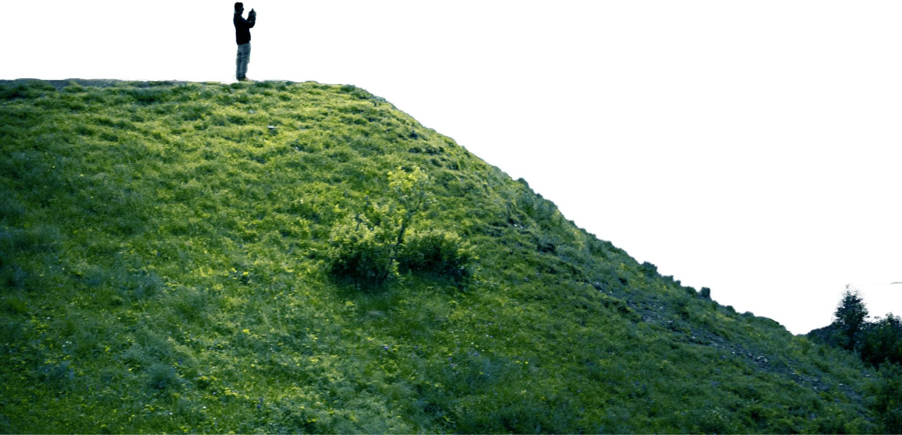
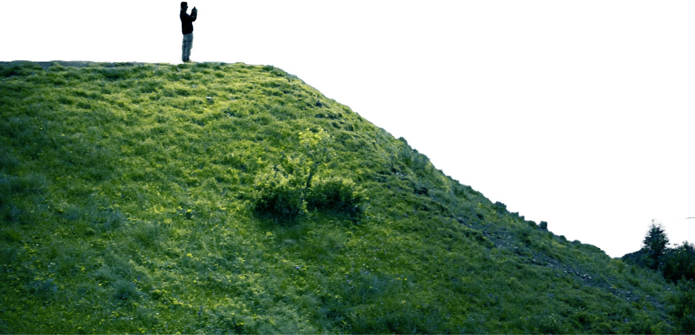

_____Get started
What Level of Hiker
are you?
Determining what level of hiker you are can be an important tool when
planning future hikes. This
hiking level guide will help you plan hikes
according to different hike ratings set by various websites like All Trails and
Modern Hiker.
What type of hiker are you – novice, moderate, advanced
moderate, expert, or expert backpacker?


_____Hiking Essentials
Picking the Right
Hiking Gear!
DThe nice thing about beginning hiking is that you don’t really need any
special gear, you can probably get away with things you already have.
Let’s start with clothing. A typical mistake hiking beginners make is wearing
jeans and regular clothes, which will get heavy and chafe wif they get
sweaty or wet.
_____where you go is the key
PUnderstand Your
Map & Timing
To start, print out the hiking guide and map. If it’s raining, throw them in a
Zip-Lock bag. Read over the guide, study the map, and have a good idea
of what to expect. I like to know what my next landmark is as I hike. For
example, I’ll read the guide and know that say, in a mile, I make a right turn
at the junction..